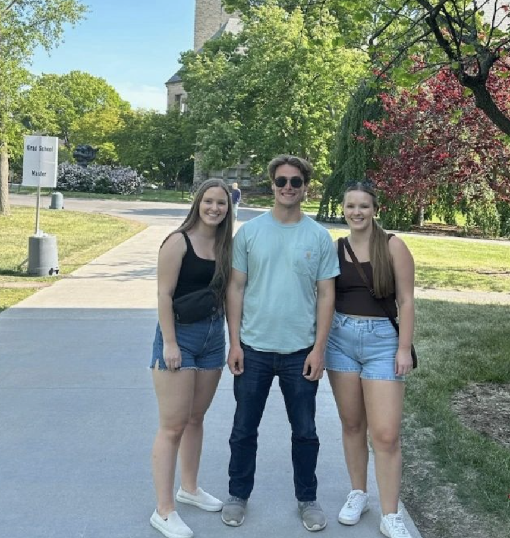
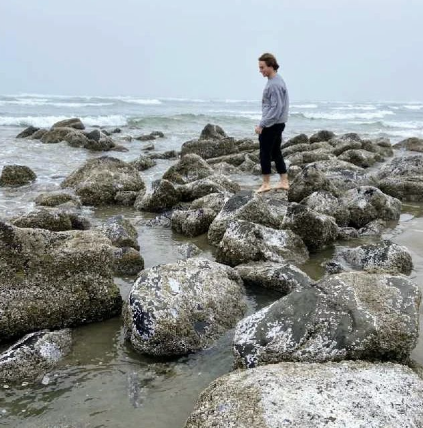

Horses on a farm in my hometown of Ashland, Oregon.
Although I was born in Hawaii, I grew up in Ashland, Oregon where I
attended Ashland High School and began to foster my love for all things
science. Back then I was just getting interested in hardware and experiment and built
a few home projects from scratch like a Tesla coil and a Hoffman Apparatus. Videos of
these experiments can be found on the older uploads of my YouTube channel.

My sisters and I in front of the Cornell Bell Tower during graduation.
For my freshman year of college I attended the University of Arizona but I decided
I wanted a change of scenery and transferred to Cornell. During my time as a physics undergaraduate,
I learned lots of math, logic, and thinking skills that help me to not only solve
problems related to physics, but also deconstruct and re-organize my thoughts in a manner
conducive to help me in my day-to-day life as a programmer.

A picture of me at the overcast Newport Beach along the Oregon Coast.